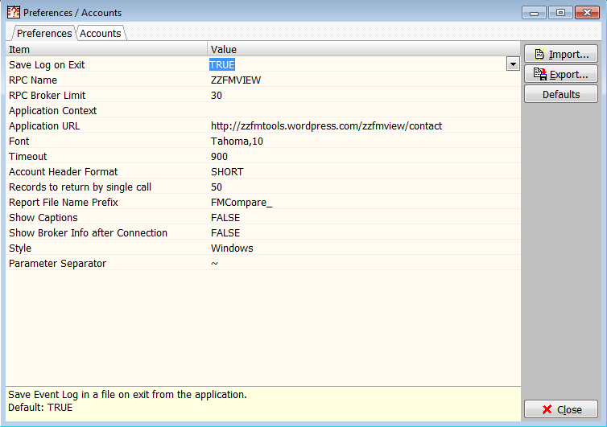

FMCompare v.1.4
Overview
The application requires custom RPC to be installed in all accounts you plan to compare.
FMDC package is used for selection of the VistA files.
The M user supposed to have XUPROG key assigned.
Installation
RPC Interface
Application Log
Preferences and Accounts
Screenshots

QuickStart
Starting the application
At the startup the application loads data based on the confirguration file.By default the configuration file is taken from the "AppData/FMView" directory. User may specify another the location as the "config" parameter:
/config=MyConfig.cfg
The A/V codes are kept encrypted in the configuration file.
To decrypt the codes application requests the "Master Password":
NOTE: If the master password is not specified the A/V are saved in the configuration file as plain text (no encryption)
Connection to a server
After the master password is set the account selection dialog is opened:

(To modify the server list use "Add" or "Delete" button.)
If the connection was successful the application enables several buttons on the toolbar and reports the connection parameters.
Selecting an Item for review
Select the category of items for comparisson by clicking on of the buttons on the toolbar.
Use buttons "R", "G", "F" to compare Routines, Globals and Files:
To select items in the selected category enter the search target.
You may use "*" as the routine name wildcard.
For example:
To search globals enter the first global node to start with:
To search FM files enter the beginning of the file name or the file number
NOTE: By default the application will limit the search result to 50 record. User can change the default value in the configuration dialog.
To start the search ckick "Search" button or "Ctrl+Enter"
Search Results
For the routine search the application returns routine names and checksums:
Double click the routine name to open routine source comparison window:
Review button hints for additional information
Installation
To install the application:
Files used by the application:
Configuration file
Configuration file contains connection parameters and the user preferences.
It should be placed in a folder the user have write privileges.
The file contains following data:
Configuraion file is required only if you are planning to connect to OSEHRA accounts.
The default name of the configuration file FMCompare.cfg.
Note that the location of files can be provided as parameters:
/config=ConfigurationFileName
RPC Installation
Copy the RPC implementation routine on server.(RPC Sample)
Register the RPC.
The registration parameters:
Install RPC in all accounts you plan to compare.
RPC Interface
The application uses one RPC for communication with VistA.
The RPC requires 2 parameters and returns the result array
Input parameters
OPTION (#1: literal, size=8, required)
ARRAY (#2: array, size=32000, optional)
OPTION literal defines action to executeARRAY contains additional parameters required by OPTION
Output
The first line of the results array RESULT contains number of lines returned the rest of the result array contains data if any:
RESULT(0)=RC
RESULT(1)=data_1
RESULT(2)=data_2
...
RESULT(RC)=data_RC
Zero or positive RC identifies the last index of the RESULT arrayFor negative RC description of the error is in the second piece ("^" delimeter) of the RESULT(0)
FMCompare uses the following options:
The default RPC name is ZZFMVIEW
Application Log
Application log includes records for all RPC that were executed.
Open application log by selection option "View|Event Log" from the application main menu.
Preferencess and Accounts
To open preferences dialog click  button of the main menu:
button of the main menu:


The Preferences dialog provides access to the next parameters:
Accounts List
Click "Accounts" tab of the application "Preference/Accounts" dialog to open Accounts list.
The Account dialog contains table of parameters used to control the connection.
Every record of the table include fields:
Note that codes are separated by ";". The application uses Master password to encrypt/decript the value of that field. Be careful providing Master password.
The local toolbar of the Accounta tab allows:
Buttons are provided with hints
Sample RPC implementation
ZZFMVIEW ; /WAA/AA - GUI INTERFACE ROUTINE ; 23/08/2012 11:54
;;1.16;ZZFMVIEW;;MAY 2018
;
RPC(RESULT,OPTION,ARRAY) ; RPC processing entry point
;
I $$VALIDOPT(OPTION)=0 S RESULT(0)="-1^Option "_OPTION_" is not supported by this RPC" Q
D CLEAN^DILF
S RESULT=$NA(^TMP("ZZFM00",$J)) K @RESULT
I '($T(@OPTION)]"") S RESULT(0)="-1^Option '"_OPTION_"' not found in routine '"_$T(+0)_"'." Q
D @OPTION
I '$D(RESULT(0)) S RESULT(0)="-1^Unspecified Error"
K ^TMP("ZZFM00",$J)
D CLEAN^DILF
Q
;
VALIDOPT(OPTNAME) ;
; option name validator
N G,OUT,FOUND S G="",OUT=0,FOUND=0
F I=1:1 D Q:OUT=1
. S G=$T(HELP+I)
. S:G["VALID OPTIONS LIST START" FOUND=1
. S:G["VALID OPTIONS LIST END" OUT=1,G=""
. Q:'FOUND
. S:$E(G,1,3)=" ;;" G=$P(G,";;",2),G=$P(G," ")
. S:G="" OUT=1
. I (G'="")&(OPTNAME=G) S OUT=1
Q (G'="")&(OPTNAME=G)
;
; ;;;;;;;;;;;;;;;;;;;;;;;;;;;;;;;;;;;;;;;;;;;;;;;;;;;;;;;;;;;;;;;;;;;;;;;;;;;;;
; GENERAL OPTIONS
; ;;;;;;;;;;;;;;;;;;;;;;;;;;;;;;;;;;;;;;;;;;;;;;;;;;;;;;;;;;;;;;;;;;;;;;;;;;;;;
;
NULL ;
S RESULT(0)="0^NULL"
Q
;
VERSION ;
S RESULT(0)="1",RESULT(1)=$P($T(+2),";",3)
Q
;
ECHO ;
N G,OUT S G="",OUT=0
F I=1:1 D Q:OUT=1
. S G=$O(ARRAY(G))
. S:G="" OUT=1
. S:G'="" RESULT(G)=ARRAY(G)
Q
;
; ;;;;;;;;;;;;;;;;;;;;;;;;;;;;;;;;;;;;;;;;;;;;;;;;;;;;;;;;;;;;;;;;;;;;;;;;;;;;;
; OPTIONS COMMON FOR FMVIEW AND FMCOMPARE
; ;;;;;;;;;;;;;;;;;;;;;;;;;;;;;;;;;;;;;;;;;;;;;;;;;;;;;;;;;;;;;;;;;;;;;;;;;;;;;
;
OS ;
I $D(^%ZOSF("OS")) S RESULT(0)=$G(^%ZOSF("OS"))
E S RESULT(0)="Unknown"
Q
;
;;;;;;;;;;;;;;;;;;;;;;;;;;;;;;;;;;;;;;;;;;;;;;;;;;;;;;;;;;;;;;;;;;;;;;;;;;;;;;;
; UNDER DEVELOPMENT
;;;;;;;;;;;;;;;;;;;;;;;;;;;;;;;;;;;;;;;;;;;;;;;;;;;;;;;;;;;;;;;;;;;;;;;;;;;;;;;
;
FILELIST ;Returns List of files
;P1 (START): First file to find
;P2 (LIMIT): Number of files to return
;P3 (KEYLEN): Length of search key
N G,I,J,P1,P2,P3
S I=0,G=ARRAY(0),P1=ARRAY(0),P2=ARRAY(1),P3=ARRAY(2)
I G="" F S G=$O(^DD(G)) Q:G="" Q:I=P2 S:G>0 RESULT(I+1)=G,I=I+1
E S:$D(^DD(G))'=0 RESULT(I)=G F I=2:1:P2 D
. S G=$O(^DD(G))
. Q:$E(P1,1,P3)'=$E(G,1,P3)
. S:G>0 RESULT(I+1)=G,I=I+1
S RESULT(0)=I
Q
;
FMFDATA ;
; FileMan File Data records.
; returns P3 records of file P1 starting from IEN>(P2-1)
;
N G,I,J,P1,P2,P3
S P1=ARRAY(0),P2=ARRAY(1),P3=ARRAY(2)
Q:'$$VFILE^DILFD(P1)
S G=$$ROOT^DILFD(P1,,1) ;File root
S I=1,J=P2-1
F S J=$O(@G@(J)) Q:'J Q:I=(P3+1) D
.S:$D(@G@(J,0)) RESULT(I)=J_"|"_@G@(J,0)
.S I=I+1
.S RESULT(I)="",I=I+1
S RESULT(0)=I-1
Q
;
SHOW1 ; Local. Not used as an OPTION
S RESULT(J)=J_"|"_NODE_"|"_@NODE,FOUND=1,J=J+1
Q
;
LISTGR ;
;Lists global. ARRAY(0) -starting node, ARRAY(1) -Nodes to return, ARRAY(2) - Direction
N I,FOUND,G,NODE,J,DIR,CNT,II
S I=0,FOUND=0,J=0,CNT=10,II=1
S NODE=ARRAY(0),DIR=-1 ; default direction
I $G(ARRAY(1)) S CNT=ARRAY(1) ; set default count
I $G(ARRAY(2)) S DIR=ARRAY(2) ; set direction if specified
S G=$D(@NODE),RESULT(0)="-1^Global "_NODE_" Not found" ;_"DIR="_DIR
I G#10=1 S J=1,II=2 D SHOW1
Q:II>CNT
;F I=1:1:CNT S NODE=$$Q^VWUTIL($NA(@NODE),DIR) Q:NODE="" D SHOW1
;F I=1:1:CNT S NODE=$$Q($NA(@NODE),DIR) Q:NODE="" D SHOW1
F I=II:1:CNT S NODE=$$NODEUP(NODE) Q:NODE="" D NDSHOW(NODE)
I 'FOUND Q
S RESULT(0)=J-1_"|"_NODE
Q
;
NDSHOW(NODE)
Q:'$D(NODE)
S RESULT(J)=J_"|"_NODE
I $D(NODE)#2=1 S RESULT(J)=RESULT(J)_"|"_@NODE
S J=J+1
Q
;
NDNAME(NODE,X) ; Replaces last subscript of NODE with X
N TMP
S TMP=$NA(@NODE,$QL(NODE)-1)
Q $NA(@TMP@(X))
;
NDDOWN(NODE,NDLIMIT) ; Finds next node starting with NODE up to LIMIT
N TMP,TMPOLD,I,III
S TMPOLD=NODE,TMP=$Q(@NODE),III=2000
I TMP=NDLIMIT Q TMPOLD
F I=1:1:III Q:(TMP="")!(TMP=NDLIMIT) D
. S TMPOLD=TMP,TMP=$Q(@TMP)
.; S RESULT(J)=" NDLIMIT="_NDLIMIT_" TMPOLD="_TMPOLD_" TMP="_TMP,J=J+1
I I=III S RESULT(J)="!!!",J=J+1 ; debug
Q TMPOLD
;
NODEUP(NODEIN) ;
N TMP,NN,TMPN,NDLIMIT
S TMPN=NODEIN,NDLIMIT=NODEIN,TMP=""
START
;S RESULT(J)=" TMPN="_TMPN,J=J+1
S TMP=$O(@TMPN,-1) ; same level prev subscript
;S RESULT(J)=" * TMPN="_TMPN_" TMP="_TMP_" $O(TMPN,-1)="_$O(@TMPN,-1),J=J+1
I TMP'="" S TMP=$$NDNAME(TMPN,TMP) Q $$NDDOWN(TMP,TMPN) ; not blank - find down
I $QL(TMPN)=1 Q "" ; quit if it is the first level ; blank. leave if first one
S NN=$NA(@TMPN,$QL(TMPN)-1) ; level up
I $D(@NN)#10=1 Q $$NDDOWN(NN,NDLIMIT) ; check if the node exists
S TMP=$O(@NN,-1) ; prev subscript
;S RESULT(J)=" NN="_NN_" $O(@NN,-1)="_$O(@NN,-1),J=J+1
I TMP="" S TMPN=NN G START ; if blank - search on prev level
I TMP'="" D ; not blank - search down
.; S RESULT(J)=" NN="_NN_" TMP="_TMP_" $$NDNAME(NN,TMP)="_$$NDNAME(NN,TMP),J=J+1
. S NN=$$NDNAME(NN,TMP),TMP=$$NDDOWN(NN,NDLIMIT)
Q TMP
;
DIM ; Code validation
N G,OUT,L,C,IND S G="",OUT=0,C="",IND=""
F I=1:1 D Q:OUT=1
. S G=$O(ARRAY(G))
. I G="" S OUT=1
. I G'="" D
. . S X=ARRAY(G),C=ARRAY(G),IND=G,L=""
. . S RESULT(IND)="IND="_IND_" "_L_" code: """_C_""""
. . D ^DIM
. . I '$D(X) S L="Invalid "
. . E S L=" Valid "
. . S RESULT(IND)=RESULT(IND)_" ---- "_L
Q
;
;;;;;;;;;;;;;;;;;;;;;;;;;;;;;;;;;;;;;;;;;;;;;;;;;;;;;;;;;;;;;;;;;;;;;;;;;;;;;;;
; ROUTINES
; ;;;;;;;;;;;;;;;;;;;;;;;;;;;;;;;;;;;;;;;;;;;;;;;;;;;;;;;;;;;;;;;;;;;;;;;;;;;;;
REXISTS ; Verifies if the routine exists
;
S X=ARRAY(0) X ^%ZOSF("TEST") I '$T S RESULT(0)="-1^Routine "_ARRAY(0)_" not found" Q
E S RESULT(0)="0^"_ARRAY(0)_" found"
Q
;
RSOURCE ; Returns Routine Source
; based on MD* routines
N DIF,X,XCNP,ZZNAME
S ZZNAME=ARRAY(0)
S X=ZZNAME X ^%ZOSF("TEST") I '$T S RESULT(0)="-1^Routine "_ARRAY(0)_" not found" Q
K ^TMP("ZZAAED",$J)
S XCNP=0,DIF="^TMP(""ZZAAED"",$J,",X=ZZNAME
X ^%ZOSF("LOAD")
S RESULT(0)=XCNP-1
F X=1:1:RESULT(0) S RESULT(X)=^TMP("ZZAAED",$J,X,0)
I '$D(RESULT) S RESULT(0)="-1^Unspecified Error"
E S RESULT(0)=RESULT(0)
Q
;
RLIST ;Modifcation-adding GTm to RLIST 01062016 jeb
; Returns list of routines from a given starting point to and end range of x
I $G(^%ZSOSF("OS"))["GTM"!(+$P($G(^%ZOSF("OS")),"^",2)=19) D Q
. N X,I,cnt,%ZE,%ZR,ctrapd,delim,exc,from,k,last,mtch,out,r,rd,N,add,beg,end,i,k,last,mtch,pct,scwc
. F I=1:1:5 S X=$T(SRC+I^%RSEL) X X
. D init^%RSEL
. k stack
. s mtch="__" d start^%RSEL(0)
. S %ZR=ARRAY(0)
. D work^%RSEL
. K RESULT
. S cnt=0
. S N="" F I=1:1 S N=$O(%ZR(N)) Q:N="" S RESULT(I)=N_"^"_%ZR(N)_N_".m",cnt=cnt+1
. S RESULT(0)=cnt
. K %ZR,^%RSET($j)
;
S ZZAAR="F S X=$O(^$ROUTINE(X)) Q:$L(X)=0 S CNT=CNT+1,RESULT(CNT)=X I Y>0 Q:Y=CNT"
N X,Y,CNT
S CNT=0,X=ARRAY(0)
S:X["*" X=$P(X,"*")
S X=$O(^$R(ARRAY(0)),-1),Y=ARRAY(1)
X ZZAAR
S RESULT(0)=CNT
Q
;
RCHKSUM ; Returns routine list with checksums based on provided target.
N I,J
S J=ARRAY(0)
F I=1:1:ARRAY(0) D
. S X=ARRAY(I)
. X ^%ZOSF("TEST")
. I $T X ^%ZOSF("RSUM") S RESULT(I)=X_"^"_Y_"^"_$$LOAD2L(X)
. I '$T S RESULT(I)=X_"^?"
S RESULT(0)=ARRAY(0)_"^rtName~rtChecksum~rtLine~rtLine"
Q
LOAD2L(X) ;Load routine first lines
N DIF,XCNP,R K ^TMP($J)
S DIF="^TMP($J,",XCNP=0,R="" X ^%ZOSF("LOAD")
I $D(R) S R=$G(^TMP($J,1,0))_"~"_$G(^TMP($J,2,0))
K ^TMP($J)
Q R
;
; ;;;;;;;;;;;;;;;;;;;;;;;;;;;;;;;;;;;;;;;;;;;;;;;;;;;;;;;;;;;;;;;;;;;;;;;;;;;;;
; GLOBALS LISTER
; ;;;;;;;;;;;;;;;;;;;;;;;;;;;;;;;;;;;;;;;;;;;;;;;;;;;;;;;;;;;;;;;;;;;;;;;;;;;;;
;
LISTGLBL ;
;from a given starting point (ARRAY(0)) to and end range of x (ARRAY(1))
N I,FOUND,G,NODE,J
S I=0,FOUND=0,J=1
S NODE=ARRAY(0)
S G=$D(@NODE),RESULT(0)="-1^Global "_NODE_" Not found"
;Q:'G
I G#10=1 D SHOW
F I=1:1:ARRAY(1) S NODE=$Q(@NODE) Q:NODE="" D SHOW
I 'FOUND Q
S RESULT(0)=I_"|"_NODE
Q
SHOW ; Local. Not used as an OPTION
;S RESULT(J)=$D(NODE)_"|"_NODE_"|"_@NODE,FOUND=1,J=J+1
S J=J+1,RESULT(J)=J-1_"|"_NODE_"|"_@NODE,FOUND=1 ;,J=J+1
Q
;
; ;;;;;;;;;;;;;;;;;;;;;;;;;;;;;;;;;;;;;;;;;;;;;;;;;;;;;;;;;;;;;;;;;;;;;;;;;;;;;
; FileMan Files
; ;;;;;;;;;;;;;;;;;;;;;;;;;;;;;;;;;;;;;;;;;;;;;;;;;;;;;;;;;;;;;;;;;;;;;;;;;;;;;
;
FMFNAME ;
;File global name and header by file number
N FNAME,GNAME
S RESULT(0)="-1^File "_ARRAY(0)_" Not found"
Q:$$VFILE^DILFD(ARRAY(0))=0
S GNAME=$G(^DIC(ARRAY(0),0,"GL"))
Q:GNAME=""
S RESULT(0)=2,RESULT(1)=GNAME
S:$D(@($$ROOT^DILFD(ARRAY(0),,0)_"0)"))#10'=0 RESULT(2)=@($$ROOT^DILFD(ARRAY(0),,0)_"0)")
Q
;
FFCHAR(FNUM,FFNUM,CHAR) ;
; internal. Used by FMFLDDEF. Field Char by File (FNUM) and Field (FFNUM)
N FFC S FFC=""
S:$D(^DD(FNUM,FFNUM,CHAR))#10=1 FFC=FNUM_"^"_FFNUM_"^"_CHAR_"^"_^DD(FNUM,FFNUM,CHAR)
Q FFC
;
FMFLDDEF ; Local, not an OPTION name
; internal. Used by FMFIELDS. Field FFNUM Characteristics for file FNUM
F I=0,".1",1,2,3,4,5,7.5,8,9,9.01,9.02,9.03,9.04,9.05,9.06,9.07,9.08,9.09,10,11,10,12.1,20,21,22,23 D
.S FC=$$FFCHAR(FNUM,FFNUM,I) S:FC'="" IND=IND+1,RESULT(IND)=FC
F I="AUDIT","AX","DEL","DT","LATGO" D
.S FC=$$FFCHAR(FNUM,FFNUM,I) S:FC'="" IND=IND+1,RESULT(IND)=FC
Q
;
FMFIELDS ;
; Characteristics of all Fields of the FileMan file FNUM
N G,FC,I,IND S G="0",IND=0,FNUM=ARRAY(0)
F S G=$O(^DD(FNUM,G)) Q:G="" S FFNUM=G D FMFLDDEF
S RESULT(0)=IND
Q
;
; ;;;;;;;;;;;;;;;;;;;;;;;;;;;;;;;;;;;;;;;;;;;;;;;;;;;;;;;;;;;;;;;;;;;;;;;;;;;;;
;
; ;;;;;;;;;;;;;;;;;;;;;;;;;;;;;;;;;;;;;;;;;;;;;;;;;;;;;;;;;;;;;;;;;;;;;;;;;;;;;
; ;;;;;;;;;;;;;;;;;;;;;;;;;;;;;;;;;;;;;;;;;;;;;;;;;;;;;;;;;;;;;;;;;;;;;;;;;;;;;
; HELP and SAMPLES
; ;;;;;;;;;;;;;;;;;;;;;;;;;;;;;;;;;;;;;;;;;;;;;;;;;;;;;;;;;;;;;;;;;;;;;;;;;;;;;
;
HELP ;
; Description and samples
N G,OUT,J,I S G="",OUT=0,J=1
F I=1:1 D Q:OUT=1
. S G=$T(HELP+9+I)
. S:G="" OUT=1
. S:G["HELP END" OUT=1
. S:(G'="")&($E(G,1,3)=" ;;") RESULT(J)=$P(G,";;",2),J=J+1
S RESULT(0)=(J-1)
Q
;*****************************************************************
;* Lines not started with " ;;" are not included in the output
;*****************************************************************
;*
;;This RPC provides data for ZZFMVIEW GUI
;;RPC requires 2 parameters and returns the result array
;;
;;Input parameters
;; - OPTION (#1: literal, size=8, required)
;; - ARRAY (#2: array, size=32000, optional)
;;
;; OPTION literal defines action to execute
;; ARRAY contains additional parameters required by OPTION
;;
;;Output
;;The first line of the results array RESULT contains number of lines returned
;;the rest of the result array contains data if any:
;;
;; RESULT(0)=RC
;; RESULT(1)=data_1
;; RESULT(2)=data_2
;; ...
;; RESULT(RC)=data_RC
;;
;;Zero or positive RC identifies the last index of the RESULT array
;;For negative RC description of the error is in the second piece ("^" delimeter) of the RESULT(0)
;;
;;The next actions (OPTIONS) are supported by this version:
;*** VALID OPTIONS LIST STARTS HERE ***
;;HELP - this text
;;NUL - returns "0^NULL"
;;VERSION - returns version of the RPC
;;ECHO - returns array sent as the parameter
;
;;REXISTS - verifies if the routine exists
;;RLIST - lists routines matchiing target
;;RSOURCE - returns source code of routine
;
;;FMFNAME - file global name and info by file number
;;LISTGLBL - List Global
;;LISTGR - List Global in reverse
;;LISTGR1
;;DIM
;;ECHO0
;
;;RCHKSUM - Checksum of list of routines
;
; FMCOMPARE - OPTIONS VALID FOR FMCOMPARE
;
;;OS - OS
;;FMCSETUP - FMC setup data
;
;*** VALID OPTIONS LIST ENDS HERE *** ;;
;;Examples
;;
;;Unknown option XXX
;; D RPC(.ZZAND,"XXX",.ZZAA)
;; - returns negative RC and description of error
;;
;; ZZAND(0)="-1^Option XXX is not supported by this RPC"
;;
;;HELP
;; D RPC(.ZZAND,"HELP")
;; - returns contents of the HELP. First line of the result array contains number of the lens returned (64)
;;
;; ZZAND(0)="64"
;; ZZAND(1)="This RPC...
;; ...
;; ZZAND(64)=""
;;
;;VERSION
;; D RPC(.ZZAND,"VERSION")
;; - returns the RPC implementation version
;;
;; ZZAND(0)="1"
;; ZZAND(0)="1.2"
;;
;;ECHO
;; S ZZAA(0)="ECHO TEST Line 1",ZZAA(1)="ECHO TEST Line 2" D RPC(.ZZAND,"ECHO",.ZZAA)
;; - returns the array as it was received by the RPC
;;
;; ZZAND(0)="ECHO TEST Line 1"
;; ZZAND(1)="ECHO TEST Line 2"
;;
;;RSOURCE
;; S ZZAA(0)="ZZFMVIEW" D RPC(.ZZAND,"RSOURCE",.ZZAA)
;; - returns source code of the "ZZFMVIEW" routine
;;
;; ZZAND(0)="361"
;; ZZAND(1)="ZZFMVIEW...
;; ...
;; ZZAND(361)="...
;;
;;RSAVE
;; S ZZAA(0)="ZZRPCV1^3",ZZAA(1)="Line One",ZZAA(2)="Line TWO",ZZAA(3)="Line Three"
;; D RPC(.ZZAND,"RSAVE",.ZZAA)
;; - saves 3 lines in "ZZRPCV1"
;;
;; ZZAND(0)="0^ZZRPCV1 SAVED"
;;
;;FMFNAME
;; S ZZAA(0)="1" D RPC(.ZZAND,"FMFNAME",.ZZAA)
;; - returns file "1" description
;;
;; ZZAND(0)=2
;; ZZAND(1)="^DIC("
;; ZZAND(2)="FILE^1^9999999.64^2366"
;;
;;- file global name and info by file number
;;
;;FMFFLDS
;; S ZZAA(0)="1" D RPC(.ZZAND,"FMFFLDS",.ZZAA)
;; - returns fields of the file "1". Field number only:
;;
;; ZZAND(0)=26
;; ZZAND(1)=.01
;; ZZAND(2)=1
;; ...
;; ZZAND(26)="SB"
;;
;;LISTGLBL
;; S ZZAA(0)="^DIC(0)",ZZAA(1)=10 D RPC(.ZZAND,"LISTGLBL",.ZZAA)
;; - returns list of 10 global nodes started from "^DIC(0)"
;; the last node found is included in the ZZAND(0)
;;
;; ZZAND(0)=10|^DIC(.11,""%D"",3,0)
;; ZZAND(1)="1|^DIC(.11,0)|INDEX^.11"
;; ZZAND(2)="1|^DIC(.11,0,""DD"")|^"
;; ZZAND(3)="1|^DIC(.11,0,""DEL"")|^"
;; ZZAND(4)="1|^DIC(.11,0,""GL"")|^DD(""IX"","
;; ZZAND(5)="1|^DIC(.11,0,""LAYGO"")|^"
;; ZZAND(6)="1|^DIC(.11,0,""WR"")|^"
;; ZZAND(7)="1|^DIC(.11,""%D"",0)|^^5^5^2980911^"
;; ZZAND(8)="1|^DIC(.11,""%D"",1,0)|This file stores information about new-style cross-references defined on a"
;; ZZAND(9)="1|^DIC(.11,""%D"",2,0)|file. Whereas traditional cross-references are stored under the 1 nodes of"
;; ZZAND(10)="1|^DIC(.11,""%D"",3,0)|the ^DD for a particular field, new-style cross-references are stored in"
;;
; HELP ENDS HERE ***********************************************************
;
November 2018